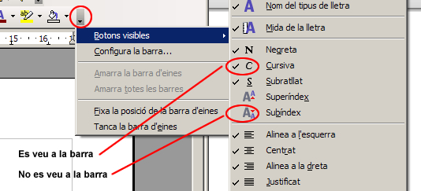
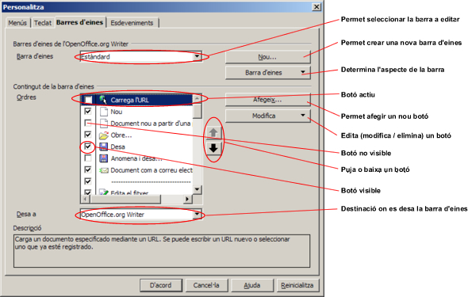
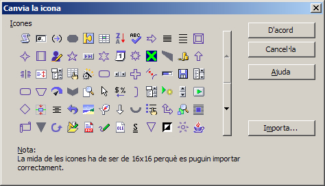
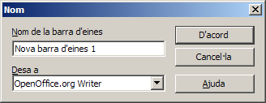
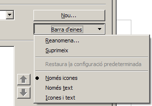
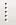

Barres d'eines
Les barres d’eines poden canviar d’aspecte, traslladant, eliminant o copiant els botons; també se’n poden crear de nous i, fins i tot, es poden crear noves barres d’eines. Els canvis que es fan a la barra d’eines es poden guardar a la plantilla bàsica del LibreOffice Writer, en qualsevol plantilla especial o en el document. Totes les opcions es fan mitjançant el quadre de diàleg que apareix quan se selecciona Eines | Personalitza | Barres d'eines.
Mostrar / Amagar un botó (eina)
Totes les barres d'eines tenen una fletxa activa a l'extrem dret. Fent clic en aquesta fletxa, apareix un menú de context, i seleccionant Botons visibles, es poden mostrar o amagar les eines de la barra.

Practiqueu el que s'ha descrit anteriorment, seguint aquestes pautes:
- Obriu el LibreOffice Writer.
- Premeu la fletxa activa de la barra d'eines Formatació i situeu-vos sobre l'opció Botons visibles fins que aparegui la llista de totes les eines disponibles per a aquesta barra d'eines.
- Activeu Espaiat entre línies: 1.
- Seguint els passos anteriors, activeu Espaiat entre línies: 1,5 i Espaiat entre línies: 2.
- Desactiveu, de manera similar, les eines Color de lletra, Ressaltat i Color de fons.
- Sortiu del LibreOffice Writer descartant desar els canvis.
- Torneu a activar el programa. Quines són les eines que es mostren en la barra d'eines Formatació?
- Restabliu les eines visibles / no visibles segons la configuració original del LibreOffice Writer.
- Activeu Color de lletra, Ressaltat i Color de fons.
- Desactiveu Espaiat entre línies: 1, Espaiat entre línies: 1,5 i Espaiat entre línies: 2.
Editar els botons d'una barra d'eines
Seleccionant Eines | Personalitza | Barres d'eines | Modifica | Canvia la icona , es poden editar les icones de les barres d'eines del programa.

Per suprimir un botó d’una barra d’eines cal clicar el botó Modifica i seleccionar Suprimeix. Podem marcar o desmarcar les caselles que apareixen al costat del botó i també les podem amagar o fer que siguin visibles.
- Obriu el LibreOffice Writer.
- Demaneu Eines | Personalitza | Barres d'eines.
- Del desplegable Barres d'eines, escolliu Formatació.
- En el bloc Contingut de la barra d'eines / Ordres, desactiveu les caselles de les eines Color de lletra, Ressaltat i Color de fons.
- En aquest mateix bloc, activeu les eines Espaiat entre línies: 1, Espaiat entre línies: 1,5 i Espaiat entre línies: 2.
- Premeu el botó D'acord.
- Compareu el resultat obtingut amb el de la pràctica anterior.
- Des de Eines | Personalitza | Barres d'eines, restabliu les condicions inicials de la barra d'eines Formatació.
Canviar la imatge d'un botó
Per canviar la imatge d’un botó es pot copiar la imatge d’un altre botó, modificar la pròpia imatge o crear-ne una de nova. Per canviar la imatge d’un botó cal seguir els passos següents:
- Seleccionar Eines | Personalitza | Barres d'eines.
- Seleccionar la barra d’eines on hi ha el botó que es vol modificar.
- Clicar al menú desplegable Modifica.
- Seleccionar Canvia la icona (Reinicia la icona retornaria a la icona per defecte).
- Escollir-ne una o importar-la.

- Els botons de desplaçament verticals de la finestra permeten accedir a totes les icones predeterminades del programa.
- El botó Importa permet afegir imatges d'icones diferents a les del programa.
- El botó D'acord canvia la icona de la barra d'eines per l'assenyalada.
Crear una barra d'eines
Es poden crear barres d’eines personalitzades i desar-les com a barres d'eines del programa (en LibreOffice Writer) o en el document actual. Per crear una barra d’eines cal seguir els passos següents:
- Activar l’opció Eines | Personalitza | Barres d'eines.
- Fer clic sobre el botó Nou.
- En fer-ho, s'obre el quadre de diàleg  que us permetrà donar el nom a la barra d'eines i decidir si afegir-la com a barra d'eines del document o com a barra d'eines del LibreOffice Writer.
- Un cop afegit el nom i decidida la destinació, cal prémer el botó D'acord.
- El botó desplegable Barra d'eines permet canviar el nom de la barra d'eines, eliminar-la o decidir la modalitat en què es presentaran les eines a la barra:
- Només les icones de les eines.
- Les icones i el text de les eines.
- Només el text de les eines.

Seguiu les següents pautes per crear una barra d'eines:
- Obriu el LibreOffice Writer.
- Deseu, amb Fitxer | Anomena i desa, el document nou que us haurà creat amb el nom barres d'eines en la vostra carpeta de treball.
- Demaneu Eines | Personalitza | Barres d'eines.
- Premeu el botó Nou.
- Escriviu el nom de la nova barra d'eines (Personal 1, per exemple).
- Desplegueu Desa a i escolliu barres d'eines.odt (el document actiu).
- Premeu el botó D'acord. Observeu que haurà canviat l'aspecte de la finestra Personalitza mostrant en blanc el bloc Contingut de la barra d'eines / Ordres. És així perquè encara no s'ha afegit cap eina a la barra. Ho fareu tot seguit.
- Premeu el botó Afegeix perquè us aparegui la finestra Afegeix ordres.
- En el bloc Categoria d'aquesta finestra, assenyaleu Documents.
- En el bloc Ordres, assenyaleu Anomena i desa.
- Premeu el botó Afegeix.
- De la mateixa manera, afegiu les ordres.
- De la categoria Documents:
- Exporta directament a PDF.
- Imprimeix.
- De la categoria Visualitza:
- Escala.
- Pantalla completa.
- Premeu el botó Tanca per tancar el diàleg Afegeix ordres.
- Premeu el botó D'acord per tancar el diàleg Personalitza.
- Si no fos visible la nova barra d'eines que heu creat, demaneu Visualitza | Barres d'eines i feu clic sobre Personal 1.
- La barra d'eines es pot traslladar arrossegant-la des del senyal  cap a la zona del document.
- Si la barra d'eines està situada fora de la zona de menús i barres del programa, se la pot enviar fent doble clic a sobre del nom de la barra.
- Deseu, amb Fitxer | Desa, els últims canvis en el document.
- Tanqueu el document i sortiu del programa.

|
|

|
|